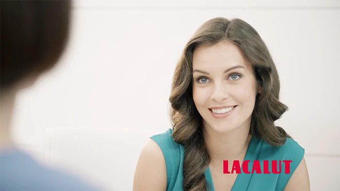
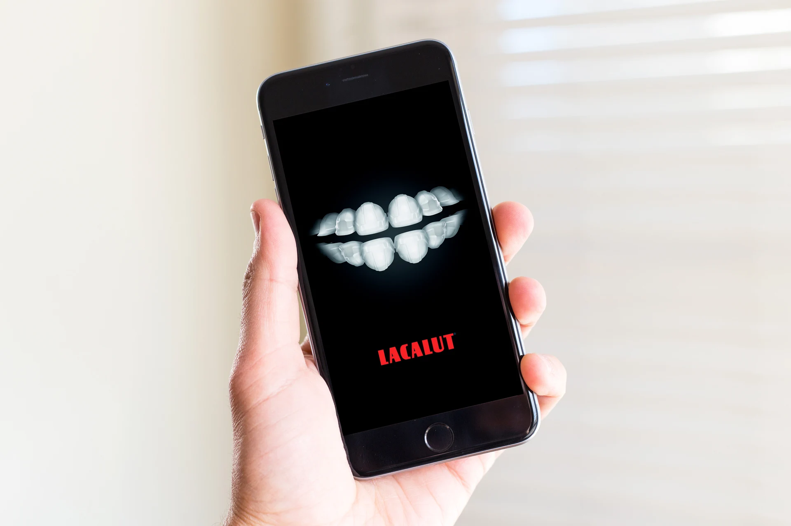

00:00—:—
Lacalut
Задачи
- Развитие имиджа бренда и привлечение новых потребителей.
- Переключение покупателей конкурентных марок.
- Стимулирование к покупке новых паст «Lacalut».
Барьеры
Большой выбор марок на рынке. Высокая рекламная активность конкурентов. Снижение доверия к «Lacalut».
Решение
Создание серии сообщений для разных каналов коммуникации с самой широкой ЦА. Продвижение каждого вида паст для решения конкретных проблем в полости рта у разных людей. Акцент на компетентном уходе, профилактических свойствах и рекомендациях друзей.

Продакшн – ОГУРЕЦ